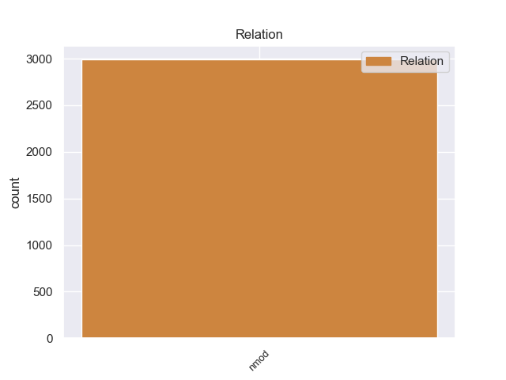
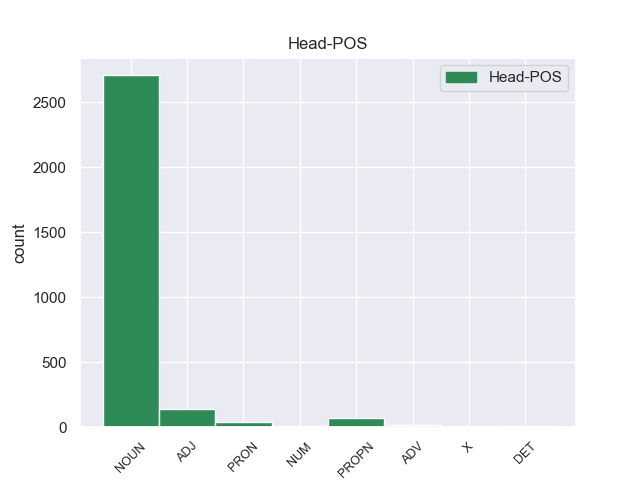
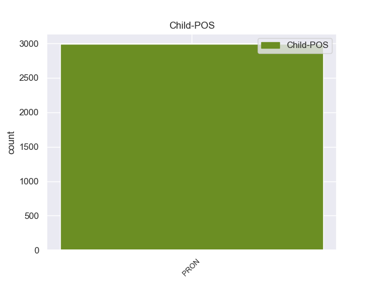

Distribution of features within this leaf



No conforming examples found.
non-conforming Examples:
1 इसका यह PRON PRP Case=Acc,Gen|Gender=Masc|Number=Sing|Person=3|Poss=Yes|PronType=Prs 3 nmod _ ChunkId=NP|ChunkType=head|Tam=kA|Translit=isakā|Vib=का
2 प्रवेश _ _ _ _ 0 _ _ _
3 द्वार द्वार NOUN NN Case=Nom|Gender=Masc|Number=Sing|Person=3 0 _ _ _
4 दो _ _ _ _ 0 _ _ _
5 मंजिला _ _ _ _ 0 _ _ _
6 है _ _ _ _ 0 _ _ _
7 । _ _ _ _ 0 _ _ _
1 जिसमें जो PRON PRP Case=Acc,Ine|Number=Sing|Person=3|PronType=Prs 3 nmod _ ChunkId=NP|ChunkType=head|Tam=meM|Translit=jisameṁ|Vib=में
2 चार _ _ _ _ 0 _ _ _
3 मेहराबें मेहराब NOUN NN Case=Nom|Gender=Fem|Number=Plur|Person=3 0 _ _ _
4 हैं _ _ _ _ 0 _ _ _
5 और _ _ _ _ 0 _ _ _
6 मुख्य _ _ _ _ 0 _ _ _
7 प्रार्थना _ _ _ _ 0 _ _ _
8 हॉल _ _ _ _ 0 _ _ _
9 में _ _ _ _ 0 _ _ _
10 जाने _ _ _ _ 0 _ _ _
11 के _ _ _ _ 0 _ _ _
12 लिए _ _ _ _ 0 _ _ _
13 9 _ _ _ _ 0 _ _ _
14 प्रवेश _ _ _ _ 0 _ _ _
15 द्वार _ _ _ _ 0 _ _ _
16 हैं _ _ _ _ 0 _ _ _
17 । _ _ _ _ 0 _ _ _
1 यहीं यहीं PRON PRP Case=Acc|PronType=Prs 5 nmod _ ChunkId=NP|ChunkType=head|Translit=yahīṁ|Vib=0_पर
2 पर _ _ _ _ 0 _ _ _
3 एक _ _ _ _ 0 _ _ _
4 कला _ _ _ _ 0 _ _ _
5 संग्रहालय संग्रहालय NOUN NN Case=Nom|Gender=Masc|Number=Sing|Person=3 0 _ _ _
6 , _ _ _ _ 0 _ _ _
7 कला _ _ _ _ 0 _ _ _
8 दीर्घा _ _ _ _ 0 _ _ _
9 , _ _ _ _ 0 _ _ _
10 फाइन _ _ _ _ 0 _ _ _
11 आर्ट _ _ _ _ 0 _ _ _
12 के _ _ _ _ 0 _ _ _
13 लिए _ _ _ _ 0 _ _ _
14 कार्यशाला _ _ _ _ 0 _ _ _
15 , _ _ _ _ 0 _ _ _
16 एक _ _ _ _ 0 _ _ _
17 थिएटर _ _ _ _ 0 _ _ _
18 , _ _ _ _ 0 _ _ _
19 अंतरंग _ _ _ _ 0 _ _ _
20 और _ _ _ _ 0 _ _ _
21 बहिरंग _ _ _ _ 0 _ _ _
22 ऑडिटोरियम _ _ _ _ 0 _ _ _
23 , _ _ _ _ 0 _ _ _
24 रिहर्सल _ _ _ _ 0 _ _ _
25 कक्ष _ _ _ _ 0 _ _ _
26 , _ _ _ _ 0 _ _ _
27 भारतीय _ _ _ _ 0 _ _ _
28 कविताओं _ _ _ _ 0 _ _ _
29 का _ _ _ _ 0 _ _ _
30 पुस्तकालय _ _ _ _ 0 _ _ _
31 , _ _ _ _ 0 _ _ _
32 शास्त्रीय _ _ _ _ 0 _ _ _
33 और _ _ _ _ 0 _ _ _
34 लोक _ _ _ _ 0 _ _ _
35 संगीत _ _ _ _ 0 _ _ _
36 संग्रहालय _ _ _ _ 0 _ _ _
37 भी _ _ _ _ 0 _ _ _
38 हैं _ _ _ _ 0 _ _ _
39 । _ _ _ _ 0 _ _ _
1 यह _ _ _ _ 0 _ _ _
2 एक _ _ _ _ 0 _ _ _
3 प्रागैतिहासिक _ _ _ _ 0 _ _ _
4 स्थल _ _ _ _ 0 _ _ _
5 पर _ _ _ _ 0 _ _ _
6 है _ _ _ _ 0 _ _ _
7 और _ _ _ _ 0 _ _ _
8 विश्व _ _ _ _ 0 _ _ _
9 में _ _ _ _ 0 _ _ _
10 अपनी अपना PRON PRP Case=Acc|Gender=Fem|Number=Sing|PronType=Prs 11 nmod _ ChunkId=NP4|ChunkType=head|Tam=0|Translit=apanī|Vib=0
11 तरह तरह NOUN NN Case=Acc|Gender=Fem|Number=Sing|Person=3 0 _ _ _
12 का _ _ _ _ 0 _ _ _
13 एक _ _ _ _ 0 _ _ _
14 ही _ _ _ _ 0 _ _ _
15 संग्रहालय _ _ _ _ 0 _ _ _
16 है _ _ _ _ 0 _ _ _
17 जो _ _ _ _ 0 _ _ _
18 प्रागैतिहासिक _ _ _ _ 0 _ _ _
19 चित्रकला _ _ _ _ 0 _ _ _
20 से _ _ _ _ 0 _ _ _
21 सज्जित _ _ _ _ 0 _ _ _
22 गुफाओं _ _ _ _ 0 _ _ _
23 के _ _ _ _ 0 _ _ _
24 समीप _ _ _ _ 0 _ _ _
25 है _ _ _ _ 0 _ _ _
26 । _ _ _ _ 0 _ _ _
1 यहाँ यहाँ PRON PRP Case=Nom|PronType=Prs 6 nmod _ ChunkId=NP|ChunkType=head|Translit=yahām̃
2 इन्वेंशन _ _ _ _ 0 _ _ _
3 और _ _ _ _ 0 _ _ _
4 फन _ _ _ _ 0 _ _ _
5 साइंस _ _ _ _ 0 _ _ _
6 गैलरी गैलरी NOUN NN Case=Nom|Gender=Fem|Number=Plur|Person=3 0 _ _ _
7 हैं _ _ _ _ 0 _ _ _
8 और _ _ _ _ 0 _ _ _
9 एक _ _ _ _ 0 _ _ _
10 तारामंडल _ _ _ _ 0 _ _ _
11 नाम _ _ _ _ 0 _ _ _
12 का _ _ _ _ 0 _ _ _
13 प्लेनेटेरियम _ _ _ _ 0 _ _ _
14 भी _ _ _ _ 0 _ _ _
15 है _ _ _ _ 0 _ _ _
16 । _ _ _ _ 0 _ _ _